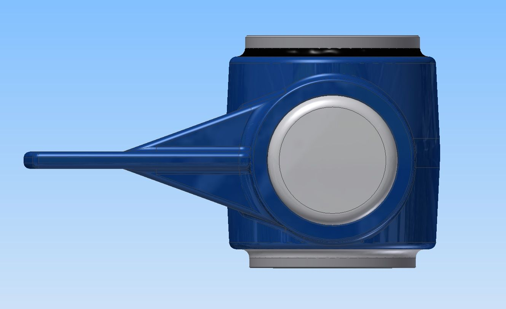

Wireless sensor platform for OEM integration
TECAT OEM Platform
Sensor fusion board and base unit for OEMs building wireless telemetry into products.
- accuracy, LC100-PP
- ±0.1% FS
- radio range
- 1,000 m
- battery life at 100 Hz
- 13 months
- max data rate
- 4 kHz


Overview
The TECAT OEM Platform is a remote sensor fusion board, a base unit, and configuration software, based on TECAT test hardware and built for integration into an OEM's own product. Its first product, the TECAT LC100-PP, integrates into artificial lift pump jack load cells. The pre-production LC100-PP measures load at ±0.1% FS and 100 Hz over a 1,000 m link, with 13 months of battery life on a 19 Ah lithium D cell.
What it measures
- Strain (torque, tension, compression, bending), including load cells
- 3-axis acceleration (optional on the TECAT LC100-PP)
- Temperature, including ambient temperature (optional on the TECAT LC100-PP)
- Pressure (liquid and gas)
- Distance and displacement
- Magnetic field
- Other quantities through MEMS sensors added to the remote unit
Features
- The remote sensor fusion board measures several quantities individually or together and is sized for integration into OEM products.
- The TECAT LC100-PP base unit mounts on a DIN rail and delivers a ratiometric 2 mV/V ±0.02 analog output from a 5.000 V ±0.05 external excitation, so it connects to existing controls.
- Data rate is 100 readings per second continuous and can be changed remotely from 1 Hz to 4 kHz.
- One 3.6 V, 19 Ah lithium D cell powers the TECAT LC100-PP remote for 13 months at 100 Hz. The base unit LED turns steady red at 3.1 V; replace the battery within 2 weeks of that signal.
- The remote unit is capable of achieving intrinsic safety certification (ATEX Zone 0), and the system is capable of achieving FCC, IC, and EU/CE wireless certification.
- Available additions: a second analog output (voltage or current), digital USB output, battery voltage monitoring, over-the-air updates and configuration, and DC power isolation of the base unit.
- The remote enters sleep mode when the base unit powers down, and data is available within 8 s of power-on.
- Configuration software lets the OEM configure, calibrate, and display data from the system.
Specifications
| System (TECAT LC100-PP, pre-production) | |
|---|---|
| Radio frequency | 2.4 GHz, license free worldwide |
| Radio channels | 16, dial selectable |
| Hazardous certification | Remote unit capable of achieving intrinsic safety (ATEX Zone 0) |
| Wireless certification | Capable of achieving FCC, IC, EU/CE |
| Remote unit (TECAT LC100-PP, pre-production) | |
| Data rate | 100 readings per second continuous; remotely adjustable from 1 Hz to 4 kHz |
| Measurement accuracy | ±0.1% FS |
| Data resolution | 14 bit |
| Sensor excitation | 2.048 V |
| Transmit power | 13.4 dBm |
| Telemetry range | 1,000 m line of sight |
| Fault output | 200% FS |
| Communication recovery after lost transmission | 1 ms |
| Battery | Lithium D cell, 3.6 V DC, 19 Ah |
| Battery life | 13 months (assumes 11 Ah used, continuous use in the worst-case environment, 100 Hz) |
| Sleep mode | Enters sleep mode when the base unit is powered down |
| Operating temperature | −40 °C to +80 °C |
| Storage temperature | −55 °C to +85 °C |
| Base unit (TECAT LC100-PP, pre-production) | |
| Power | 11.5 V DC to 25 V DC |
| Supply current | 500 mA |
| Transmit power | 20 dBm |
| Nominal latency | 50 ms |
| External excitation | 5.000 V DC ±0.05 |
| Analog output | 2 mV/V ±0.02, ratiometric to external excitation |
| Analog filter | 100 Hz (−3 dB) |
| Fault output | 0 V DC common mode |
| Time to data after power-on | 8 s maximum |
| Status LED | Steady blue: good communication. Red flashes: retries. Steady red: battery below 3.1 V, replace within 2 weeks |
| Operating temperature | −40 °C to +80 °C |
| Storage temperature | −55 °C to +85 °C |
| Mounting | DIN rail |
| Software | |
| Configuration software | Configure, calibrate, and display data from the system |
| Updates | Over-the-air updating and user configuration, available as an addition |
How the system works
-
Remote unit
Mounts on the moving part. Holds the capture electronics, Micro-Measurements strain gages or thermocouples, the radio, and a long-life battery.
-
Base unit
Plugs into your PC by USB. Holds the antenna and receiver, with analog outputs that feed your data acquisition system.
-
TECAT Data Viewer
Software on the PC for setup, calibration, live monitoring, and recording.
Downloads
-
OEM Telemetry Platform Brochure
Brochure in spread layout describing TECAT's wireless OEM telemetry platform for integration into OEM products, including a pump jack load cell example. Published under the earlier WISER name.
-
LC100-PP Pre-Production Brochure
Four-page pre-production brochure with specifications for the TECAT LC100-PP telemetry system, designed for artificial lift load cell applications. Published under the earlier WISER name.
-
TECAT Announces Patent for Wireless Axial Load Cell and Sensor Assembly Capability
TECAT announced a patent for its wireless axial load cell and sensor assembly, the WISER LC100, which combines position data with load for artificial lift.


Ready to measure?
Tell us about the part and what you need to measure, and we'll follow up with a recommendation and a quote.